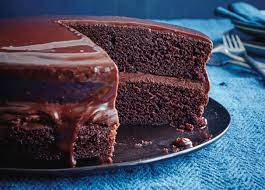
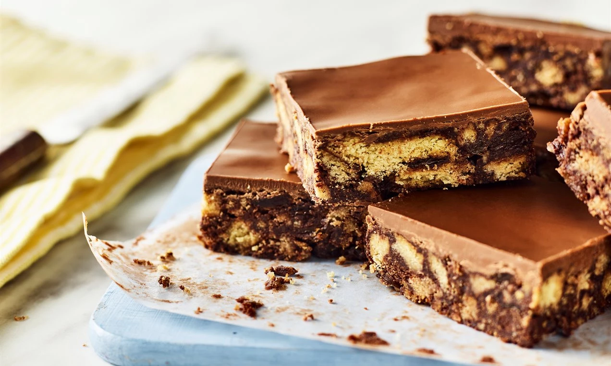

Chocolate fudge Cake

Ingredients
- 150ml sunflower oil, plus extra for the tin
- 175g self-rising flour
- 2 tbsp cocoa powder
- 1 tsp bicarbonate of soda
- 150g caster sugar
- 2 tbsp golden syrup
- 2 large eggs, lightly beaten
- 150ml semi-skimmed milk
- For the icing
- 100g unsalted butter
- 225g icing sugar
- 40g cocoa powder
- 2½ tbsp milk (a little more if needed)
How to make
- Heat the oven to 180C/160C fan/gas 4. Oil and line the base of two 18cm sandwich tins. Sieve the flour, cocoa powder and bicarbonate of soda into a bowl. Add the caster sugar and mix well.
- Make a well in the center and add the golden syrup, eggs, sunflower oil and milk. Beat well with an electric whisk until smooth.
- Pour the mixture into the two tins and bake for 25-30 mins until risen and firm to the touch. Remove from oven, leave to cool for 10 mins before turning out onto a cooling rack.
- To make the icing, beat the unsalted butter in a bowl until soft. Gradually sieve and beat in the icing sugar and cocoa powder, then add enough of the milk to make the icing fluffy and spreadable.
- Sandwich the two cakes together with the butter icing and cover the sides and the top of the cake with more icing.
Chocolate Tiffin

Ingredients
- 150g butter, cubed, plus extra for the tin
- 3 tbsp caster sugar
- 3 tbsp golden syrup
- 6 tsp cocoa powder
- 225g biscuits, crushed
- handful of raisins
- 110g milk chocolate
- 110g dark chocolate
How to make
- Butter and line a 15-20cm tin with baking parchment. In a large saucepan, melt the butter, sugar, syrup and cocoa. Stir through the biscuits and raisins.
- Pour the mixture into the prepared tin and press down, then smooth the top with the back of a spoon. Microwave both chocolates in short 20 second bursts, stirring frequently, until melted. Pour them over the mixture in the tin. Use a palette knife or spoon to smooth over, so it's completely coated in chocolate.
- Put the tin into the fridge and leave for about 2 hours to set, or overnight. Run a kitchen knife under the hot tap then cut into squares.
Chocolate Cheesecake

Ingredients
For the biscuit base
- 150g digestive biscuits (about 10)
- 1 tbsp caster sugar
- 45g butter, melted, plus extra for the tin
For the cheesecake
- 150g dark chocolate
- 120ml double cream
- 2 tsp cocoa powder
- 200g full-fat cream cheese
How to make
- To make the biscuit base, crush the digestive biscuits with a rolling pin or blitz in a food processor, then tip into a bowl with the sugar and butter and stir to combine. Butter and line an 18cm springform tin and tip in the biscuit mixture, pushing it down with the back of a spoon. Chill in the fridge for 30 mins.
- To make the cheesecake, melt the chocolate in short bursts in the microwave, then leave to cool slightly. Whip the cream in a large bowl using an electric whisk until soft peaks form, then fold in the cocoa powder. Beat the cream cheese and sugar together, then fold in the cream mixture and the cooled chocolate.
- Spoon the cheesecake mixture over the biscuit base, levelling it out with the back of a spoon. Transfer to the freezer and freeze for 2 hours, or until set. Remove from the tin and leave at room temperature to soften for about 20 mins before serving.